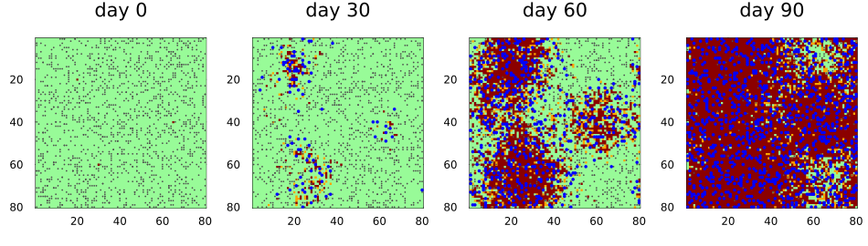
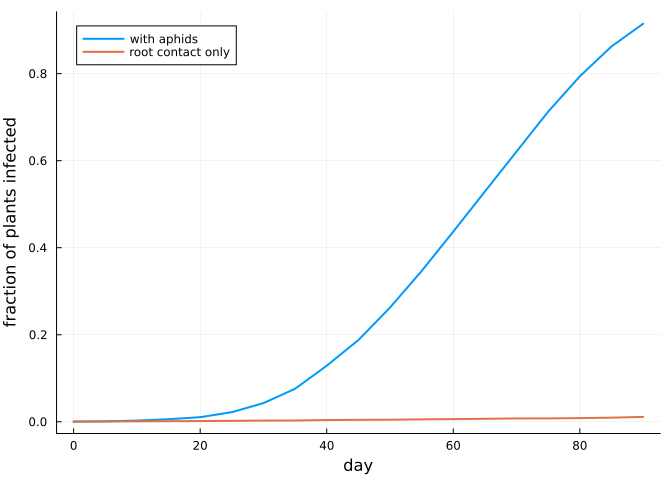
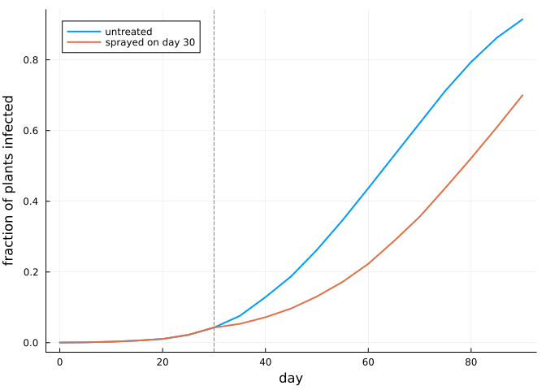
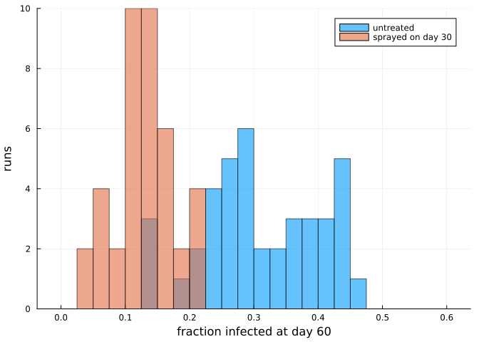

Hybrid models with Agents.jl
Simon Frost
Overview
Many plant pathogens are not spread from plant to plant but carried by mobile vectors: aphids carry viruses, beetles carry fungi, farmers carry everything on their boots and tools. A cellular automaton describes the crop well, and an agent-based model describes the vectors well. AgentsBackend combines the two. The state of the cellular automaton lives inside an Agents.jl model, the vectors are ordinary Agents.jl agents in the same model, and each step runs the cellular automaton’s sweep and then moves the agents.
This vignette builds an aphid-borne virus epidemic in a field, shows the two ways of storing the crop (as a grid or as one agent per plant), intervenes with an insecticide from a callback, and runs an ensemble.
ENV["GKSwstype"] = "100"
using CellularAutomataCore
using Agents
using Plots
using Random
using StatisticsBoth packages export a GraphSpace, so with both loaded it has to be written qualified, as CellularAutomataCore.GraphSpace or Agents.GraphSpace. This vignette uses neither.
The crop
Each cell is a plant: healthy (0), infected but not yet showing symptoms (1), or symptomatic (2). Infected plants develop symptoms after a latent period of τ days on average, and a symptomatic plant infects each healthy neighbour with a small probability ε per day, through root contact. Without vectors, that is the whole model.
crop = LocalRule(VonNeumann(1)) do cell, nbrs, ctx
if cell == 0
k = count(==(2), nbrs)
return bernoulli(ctx, 1 - (1 - ctx.p.ε)^k, 1) ? Int8(1) : Int8(0)
elseif cell == 1
return bernoulli(ctx, 1 / ctx.p.τ, 2) ? Int8(2) : Int8(1)
end
return cell
end
n = 80
u0 = zeros(Int8, n, n)
for (i, j) in ((20, 20), (60, 30), (40, 65))
u0[i, j] = 2
end
p = (ε=0.02, τ=5, inoculation=0.4, acquisition=0.6, loss=0.1, flight=3,
emigration=0.03, immigrants=40)
prob = CAProblem(crop, u0, 90, p; seed=1)CAProblem(LocalRule(<anonymous function>, VonNeumann(1)) on Torus((80, 80)), tspan=(0, 90))AgentsBackend can run this problem without any agents. The crop then lives in the model’s properties, and the result is exactly that of the default ArrayBackend.
solve(prob; backend=AgentsBackend()).u == solve(prob).utrueThe vectors
The aphids are Agents.jl agents on a grid of the field’s size, with one extra field: whether the aphid carries the virus. Each day an aphid may leave the field, otherwise it flies up to flight cells, probes the plant it lands on, and may infect it or pick up the virus from it. A non-persistent virus is lost again after a while. New aphids fly in every day.
The aphids reach the crop through read_cell(model, pos) and write_cell!(model, pos, value), and the parameters of the problem through model.p. Their random numbers come from abmrng(model), which the backend seeds from the problem’s seed, so a run is reproducible.
@agent struct Aphid(GridAgent{2})
viruliferous::Bool
end
function aphid_step!(aphid, model)
rng, p = abmrng(model), model.p
if rand(rng) < p.emigration
remove_agent!(aphid, model)
return
end
randomwalk!(aphid, model, p.flight; ifempty=false)
plant = read_cell(model, aphid.pos)
if aphid.viruliferous && plant == 0 && rand(rng) < p.inoculation
write_cell!(model, aphid.pos, 1)
end
if plant == 2 && rand(rng) < p.acquisition
aphid.viruliferous = true
elseif rand(rng) < p.loss
aphid.viruliferous = false
end
return
end
immigrate!(model) = foreach(_ -> add_agent!(Aphid, model; viruliferous=false),
1:model.p.immigrants)
colonise!(model) = foreach(_ -> add_agent!(Aphid, model; viruliferous=false), 1:1500)colonise! (generic function with 1 method)The backend takes the agent type and three functions: init! adds the first agents once the crop is set, agent_step! is called for every aphid after each sweep of the crop, and model_step! once per step after that.
aphids = AgentsBackend(:grid; agent_type=Aphid, init! =colonise!,
agent_step! =aphid_step!, model_step! =immigrate!)AgentsBackend(:grid; agent_type=Main.Notebook.Aphid)A run
agent_model(integ) returns the Agents.jl model behind an integrator. A SavingCallback uses it to record where the aphids are, alongside the saved states of the crop.
positions = SavedValues(Int, Vector{Tuple{Int,Int,Bool}})
record(u, t, integ) = [(a.pos..., a.viruliferous) for a in allagents(agent_model(integ))]
sol = solve(prob; backend=aphids, saveat=30,
callback=SavingCallback(record, positions; saveat=30))
panels = map(eachindex(sol.t)) do i
plot(sol; snapshot=i, c=[:palegreen, :orange, :darkred], clims=(0, 2),
colorbar=false, title="day $(sol.t[i])")
a = positions.saveval[i]
carriers = filter(last, a)
scatter!([x[2] for x in a], [x[1] for x in a]; ms=1, msw=0, c=:grey30,
label=nothing)
scatter!([x[2] for x in carriers], [x[1] for x in carriers]; ms=2, msw=0,
c=:blue, label=nothing)
end
plot(panels...; layout=(1, 4), size=(950, 270))
Healthy plants are green, infected plants orange and symptomatic plants dark red; grey dots are aphids and blue dots aphids carrying the virus. The aphids carry the virus well beyond the three initial foci, and each satellite infection becomes a focus of its own. Without the aphids the epidemic barely moves:
prevalence(s) = [count(>(0), u) / length(u) for u in s.u]
dense = solve(prob; backend=aphids, saveat=5)
alone = solve(prob; saveat=5)
plot(dense.t, prevalence(dense); label="with aphids", xlabel="day",
ylabel="fraction of plants infected", legend=:topleft, lw=2)
plot!(alone.t, prevalence(alone); label="root contact only", lw=2)
One agent per plant
With AgentsBackend(:cells) every plant is itself an agent, with fields id, pos and state, and the agent with id i is the plant with linear index i. The crop can then be inspected with the usual Agents.jl tools, and the aphids get ids after the plants. The backend gathers the plants’ states into an array for each sweep and writes the result back, so the run is exactly the same as with the grid.
Because a plant agent stands on every cell, Agents.jl functions that look for empty cells would find none, which is why aphid_step! passes ifempty=false to randomwalk!.
plants = AgentsBackend(:cells; agent_type=Aphid, init! =colonise!,
agent_step! =aphid_step!, model_step! =immigrate!)
cellsol = solve(prob; backend=plants, saveat=30)
cellsol.u == sol.utrueinteg = init(prob; backend=plants)
step!(integ, 40)
model = agent_model(integ)
plant = model[LinearIndices((n, n))[40, 65]]
(plant.pos, plant.state, count(a -> a isa Aphid, allagents(model)))((40, 65), 2, 1370)Keeping a plant agent per cell costs a little time each step, to gather and scatter the states:
solve(prob; backend=aphids); solve(prob; backend=plants)
(grid=(@elapsed solve(prob; backend=aphids)), cells=(@elapsed solve(prob; backend=plants)))(grid = 0.034004083, cells = 0.036793833)Insecticide from a callback
Callbacks reach the agents through agent_model. Here an insecticide sprayed on day 30 kills 90% of the aphids then in the field; immigration carries on.
function spray!(integ)
model = agent_model(integ)
for a in collect(allagents(model))
rand(abmrng(model)) < 0.9 && remove_agent!(a, model)
end
end
sprayed = solve(prob; backend=aphids, saveat=5, callback=PresetTimeCallback([30], spray!))
plot(dense.t, prevalence(dense); label="untreated", xlabel="day",
ylabel="fraction of plants infected", legend=:topleft, lw=2)
plot!(sprayed.t, prevalence(sprayed); label="sprayed on day 30", lw=2)
vline!([30]; c=:grey, ls=:dash, label=nothing)
The spray buys about two weeks: the aphids flying in from outside the field restore the population, and with it the spread.
Ensembles
Every trajectory of an EnsembleProblem gets its own seed, so its own crop draws and its own aphid random numbers. Here is the fraction of plants infected at day 60, untreated and sprayed, over 40 runs each.
day60 = remake(prob; tspan=(0, 60))
final_prevalence = (s, ctx) -> (count(>(0), final_state(s)) / n^2, false)
ens = EnsembleProblem(day60; output_func=final_prevalence)
untreated = solve(ens, Synchronous(), EnsembleThreads(); trajectories=40,
backend=aphids, save_everystep=false)
treated = solve(ens, Synchronous(), EnsembleThreads(); trajectories=40,
backend=aphids, save_everystep=false,
callback=PresetTimeCallback([30], spray!))
histogram(untreated.u; bins=0:0.025:0.6, alpha=0.6, label="untreated",
xlabel="fraction infected at day 60", ylabel="runs")
histogram!(treated.u; bins=0:0.025:0.6, alpha=0.6, label="sprayed on day 30")